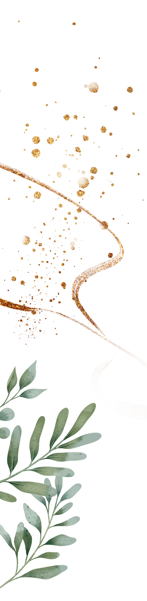
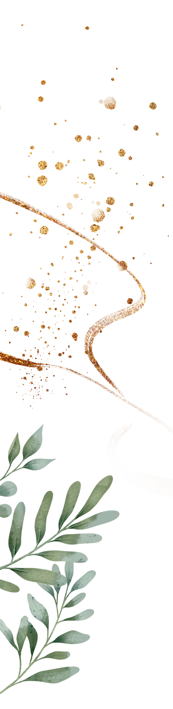

09
Avgust
2025


09
Avgust
2025


Jos na prvi pogled mogli smo oboje naslutiti da nesto postoji medu nama.
U pocetku to je bilo uzajamno nerviranje, (slatko, ne preterano) provociranje, dok ne bi ispitali jedno drugo. Na nasu srecu, uspeli smo da se makar dogovorimo i organizujemo nas prvi sastanak. Nismo ni slutili da de nam taj momenat promeniti zivot, zajedno nas upotpuniti I tako, nakon 7 godina provedenih zajedno, odlucili smo da to krunisemo ovom svecanoscu.
Ne postoji nikakva nasa druga polovina: Jednostavno postoje vremenski periodi u kojima nam je sa nekim dobro. Tri minuta. Dva dana. Pet godina. Ceo zivot.
 
